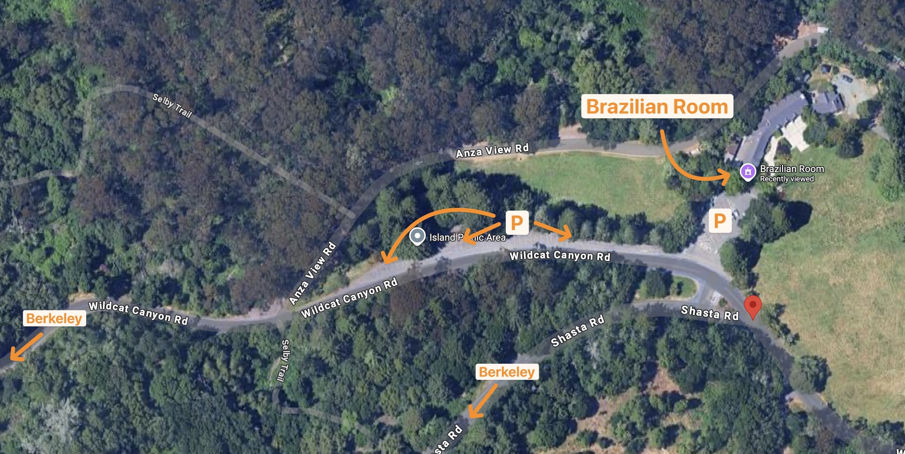

Ferd Leimkuhler Memorial Celebration
When
Friday, June 12, 2026, Noon to 2pm.
Where
The Brazilian Room in Tilden Park, on the eastern edge of Berkeley, California.
Food & Drink
Refreshments will be served.
RSVP
Let us know who's coming by emailing Kristin at
leimgal@gmail.com.
Streaming
We intend to stream the event live and make it available for later viewing.
Check back here for details.
Participation
There'll be an opportunity to speak, for anyone who wants to, at the event.
If you can't attend in person and want to share something, send a video!
Here are some guidelines:
- Record in horizontal format; if using a phone, turn it sideways
- Make sure a light source is facing you and is not behind you
- Record indoors in a quiet place
- Begin your video by saying your name and how you knew Ferd
- Try to keep it under five minutes long
- If your video file is under 25MB, attach it to an email; otherwise upload it to a cloud service and send us a link
- Send your video by Sunday, May 31st to Kristin at leimgal@gmail.com
You can also send something you've written for us to read for you!
Email your written remembrance to
leimgal@gmail.com.
Driving Directions
The Brazilian Room is located in Tilden Regional Park at the intersection of
Wildcat Canyon and Shasta Roads.
View on Google Maps
☞
Note! There is little or no cellular reception at the Brazilian Room, so plan ahead!
From Highway 80:
Take University Avenue exit in Berkeley
Follow University until it ends at Oxford St.
Left on Oxford to Rose St.
Right on Rose one block to Spruce St.
Left on Spruce and go about 1.5 miles to the stop sign at Grizzly Peak Blvd.
Continue straight across Grizzly Peak Blvd. and Spruce becomes Wildcat Canyon Road
Continue for two miles and the Brazilian Room will be on your left
From Highway 24 heading west:
Before Caldecott Tunnel, exit Fish Ranch Road
Follow it to the stop sign at Grizzly Peak Boulevard
Turn right and go about 2.5 miles to Golf Course Road
Right on Golf Course Rd. to Shasta Road
Right on Shasta; it ends at Wildcat Canyon Rd.
The Brazilian Room parking lot is directly ahead
Parking
There is a parking area directly in front of the Brazilian Room.
You can also park along Wildcat Canyon Rd.
Parking is allowed on the shoulder of Anza View Rd.

Questions